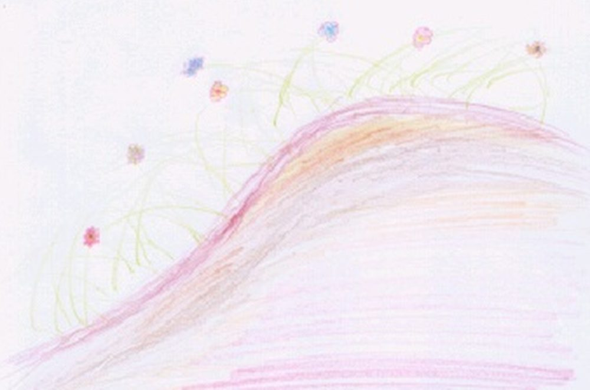

Οι νότες στις γραμμές
Πείτε το όνομα κάθε νότας μαζί με το πιάνο.
Μαθήματα μουσικής ανάγνωσης · Μέρος Α΄
Οδηγός ασκήσεων με ήχο
Ιωάννης ΙδομενέωςΔιευθυντής Χορωδιών · Λυρικός Τραγουδιστής · Καθηγητής Φωνητικής Τέχνης

Όταν μια άσκηση είναι ψηλή για τη φωνή σας, τραγουδήστε τη μια οκτάβα χαμηλότερα. Στις γραπτές ασκήσεις γράψτε πρώτα την απάντησή σας σε ένα χαρτί, και μετά πατήστε «Δείτε τη λύση».
Οι νότες γράφονται στις πέντε γραμμές του πενταγράμμου και στα τέσσερα διαστήματα ανάμεσά τους. Τις γραμμές και τα διαστήματα τα μετράμε από κάτω προς τα πάνω. Όσο πιο ψηλά βρίσκεται το φθογγόσημο, τόσο υψηλότερο είναι το τονικό του ύψος.
Το κλειδί του Σολ ορίζει ότι η νότα στη 2η γραμμή είναι το σολ. Έτσι παίρνουν την ονομασία τους και όλες οι υπόλοιπες νότες.
Πείτε το όνομα κάθε νότας μαζί με το πιάνο.
Πείτε το όνομα κάθε νότας μαζί με το πιάνο.
Το ντο γράφεται σε μια μικρή δική του γραμμή, τη βοηθητική γραμμή. Το ρε γράφεται ακριβώς κάτω από την 1η γραμμή.
μι · σολ · φα · λα · ντο · ρε · σι · μι
ρε · φα · ντο · λα · σολ · μι · σι · ρε
Στις γραμμές: μι, σολ, σι, ρε. Στα διαστήματα: φα, λα, ντο.
Συγκρίνετε με το πεντάγραμμο:
Όταν η μία νότα είναι σε γραμμή και η επόμενη στο αμέσως διπλανό διάστημα, ή το αντίστροφο, πηγαίνουμε από τη μία στην άλλη με βήμα. Όταν προσπερνάμε μία ή περισσότερες νότες, κάνουμε άλμα.
Οι ασκήσεις αυτής της ενότητας έχουν μόνο μισά και ολόκληρα. Κάθε μισό το κρατάμε δύο χρόνους και κάθε ολόκληρο τέσσερις.
Ντο–μι, ρε–φα, μι–σολ: προσπερνάμε μία νότα.
1 βήμα · 2 άλμα · 3 βήμα · 4 άλμα · 5 βήμα · 6 άλμα
ρε · μι · φα · σολ · λα
Η μουσική κινείται με σταθερούς παλμούς. Κάθε παλμός λέγεται χρόνος. Το τέταρτο διαρκεί έναν χρόνο, το μισό δύο και το ολόκληρο τέσσερις. Δύο όγδοα διαρκούν όσο ένα τέταρτο. Κάθε παύση έχει τη διάρκεια του φθογγοσήμου που της αντιστοιχεί.
Σε κάθε νότα λέμε «τα» και το κρατάμε όσο διαρκεί η νότα. Στις παύσεις σωπαίνουμε. Εδώ οι ασκήσεις γράφονται χωρίς διαστολές, γιατί τις διαστολές τις βλέπουμε στην επόμενη ενότητα.
Στην παύση ολοκλήρου μετράμε σιωπηλά τέσσερις χρόνους.
Δύο όγδοα μαζί χωρούν σε έναν χρόνο: «τα-τα».
τέταρτο 1 · μισό 2 · ολόκληρο 4 · όγδοο ½
Το τέταρτο με την παύση τετάρτου, το μισό με την παύση μισού και το ολόκληρο με την παύση ολοκλήρου.
2 + 1 + 1 + 4 = 8 χρόνοι
Παλιότερα η μουσική γραφόταν χωρίς διαστολές. Σήμερα η μουσική χωρίζεται σε μέτρα. Τα μέτρα τα χωρίζουν οι κάθετες γραμμές, οι διαστολές. Στο τέλος υπάρχει η διπλή, τελική διαστολή.
Το κλάσμα στην αρχή δείχνει πόσους χρόνους έχει κάθε μέτρο. Ο πάνω αριθμός λέει πόσοι είναι οι χρόνοι και ο κάτω τι αξία έχει ο καθένας: το 4 σημαίνει τέταρτο. Στα 2/4, 3/4 και 4/4 ο χρόνος είναι ένα τέταρτο. Τα 4/4 γράφονται και με το σύμβολο C.

Μετράτε μέσα σας 1, 2, 3, 4 σε κάθε μέτρο.

Το μισό με την τελεία διαρκεί τρεις χρόνους και γεμίζει όλο το μέτρο.
3 χρόνοι σε κάθε μέτρο: 3/4
Συγκρίνετε με τις διαστολές παρακάτω:
Συγκρίνετε με τις διαστολές παρακάτω:
Λείπουν χρόνοι στα μέτρα 2 (δύο χρόνοι), 3 (ένας), 5 (δύο), 6 (ένας) και 8 (δύο). Μπορείτε να τα συμπληρώσετε με όποιες νότες ή παύσεις θέλετε, αρκεί να γεμίζουν τους χρόνους που λείπουν.
Σημαίνει 4/4: τέσσερις χρόνοι σε κάθε μέτρο, με χρόνο το τέταρτο.
Ο ρυθμός είναι οι διάρκειες των νοτών και των παύσεων πάνω στον σταθερό παλμό. Δύο όγδοα μοιράζουν έναν χρόνο στα δύο: «τα-τα». Τέσσερα δέκατα έκτα τον μοιράζουν στα τέσσερα: «τα-τα-τα-τα».
Ξεκινήστε αργά και κρατήστε τον παλμό σταθερό. Η ταχύτητα έρχεται μόνη της.
Στην παύση ογδόου σωπαίνουμε για μισό χρόνο.
Ένα όγδοο και δύο δέκατα έκτα γεμίζουν πάλι έναν χρόνο: «τα-α τα-τα» ή «τα-τα τα-α».
Δύο όγδοα και τέσσερα δέκατα έκτα.
½ + ½ + 1 + 2 = 4 χρόνοι
Κάθε άσκηση τη μαθαίνουμε σε τρία στάδια: πρώτα λέμε τα ονόματα των νοτών, μετά τα λέμε στον ρυθμό τους σε ένα ύψος, και στο τέλος τραγουδάμε τη μελωδία.
Εδώ προστίθενται το λα, το σι, το ψηλό ντο και το ψηλό ρε.
Η σύζευξη είναι ένα τόξο που ενώνει δύο ίδιες νότες: τραγουδάμε μία νότα με τη διάρκεια και των δύο.
Η στιγμή διαρκείας είναι μια τελεία δίπλα στο φθογγόσημο: του προσθέτει τη μισή του διάρκεια. Το μισό με τελεία διαρκεί τρεις χρόνους και το τέταρτο με τελεία ενάμιση.
Στο πρώτο μέτρο η σύζευξη κάνει ό,τι κάνει η στιγμή διαρκείας στο δεύτερο.
Το όγδοο με τελεία μαζί με ένα δέκατο έκτο γεμίζουν έναν χρόνο.
Το μισό με τελεία 3 χρόνους. Το τέταρτο με τελεία 1½ χρόνο.
2 + 4 = 6 χρόνοι
Ο 1ος χρόνος κάθε μέτρου είναι ισχυρός: έχει περισσότερο βάρος. Οι άλλοι είναι ασθενείς. Στα 4/4 ο 3ος χρόνος είναι ημιισχυρός: έχει λιγότερο βάρος από τον 1ο και περισσότερο από τον 2ο και τον 4ο. Στα 3/4 έχουμε δύο ασθενείς χρόνους, τον 2ο και τον 3ο.
Σε ένα τραγούδι με στίχους τονίζουμε ακολουθώντας την προσωδία της γλώσσας, δηλαδή τον φυσικό τονισμό των λέξεων, ακόμη κι όταν το τραγούδι έχει διαστολές. Ένα παράδειγμα είναι το «Χάρτινο το φεγγαράκι» του Μάνου Χατζιδάκι.
Οι δυναμικοί χρωματισμοί δείχνουν πόσο δυνατά ηχεί μια φράση: p σιγά, f δυνατά, crescendo σταδιακά δυναμώνει, decrescendo σταδιακά ησυχάζει.

Τονίστε λίγο τον 1ο χρόνο. Στο 3ο μέτρο, από τα δύο όγδοα ισχυρό είναι μόνο το πρώτο.
Τονίστε λίγο τον 1ο χρόνο κάθε μέτρου.
Τονίστε τον 1ο χρόνο και λιγότερο τον 3ο.
Τραγουδήστε την πρώτη φορά σιγά (p) και τη δεύτερη δυνατά (f).
Το σύμβολο C στην αρχή σημαίνει 4/4.
Σε όλα ο 1ος χρόνος. Στα 4/4 ο 3ος είναι ημιισχυρός.
p σιγά · f δυνατά · crescendo σταδιακά δυναμώνει · decrescendo σταδιακά ησυχάζει
✎ 1 μι · σολ · φα · λα · ντο · ρε · σι · μι
✎ 2 ρε · φα · ντο · λα · σολ · μι · σι · ρε
✎ 3 Στις γραμμές: μι, σολ, σι, ρε. Στα διαστήματα: φα, λα, ντο.
✎ 4 Συγκρίνετε με το πεντάγραμμο:
✎ 5 1 βήμα · 2 άλμα · 3 βήμα · 4 άλμα · 5 βήμα · 6 άλμα
✎ 6 ρε · μι · φα · σολ · λα
✎ 7 τέταρτο 1 · μισό 2 · ολόκληρο 4 · όγδοο ½
✎ 8 Το τέταρτο με την παύση τετάρτου, το μισό με την παύση μισού και το ολόκληρο με την παύση ολοκλήρου.
✎ 9 2 + 1 + 1 + 4 = 8 χρόνοι
✎ 10 3 χρόνοι σε κάθε μέτρο: 3/4
✎ 11 Συγκρίνετε με τις διαστολές παρακάτω:
✎ 12 Συγκρίνετε με τις διαστολές παρακάτω:
✎ 13 Λείπουν χρόνοι στα μέτρα 2 (δύο χρόνοι), 3 (ένας), 5 (δύο), 6 (ένας) και 8 (δύο). Μπορείτε να τα συμπληρώσετε με όποιες νότες ή παύσεις θέλετε, αρκεί να γεμίζουν τους χρόνους που λείπουν.
✎ 14 Σημαίνει 4/4: τέσσερις χρόνοι σε κάθε μέτρο, με χρόνο το τέταρτο.
✎ 15 Δύο όγδοα και τέσσερα δέκατα έκτα.
✎ 16 ½ + ½ + 1 + 2 = 4 χρόνοι
✎ 17 Το μισό με τελεία 3 χρόνους. Το τέταρτο με τελεία 1½ χρόνο.
✎ 18 2 + 4 = 6 χρόνοι
✎ 19 Σε όλα ο 1ος χρόνος. Στα 4/4 ο 3ος είναι ημιισχυρός.
✎ 20 p σιγά · f δυνατά · crescendo σταδιακά δυναμώνει · decrescendo σταδιακά ησυχάζει